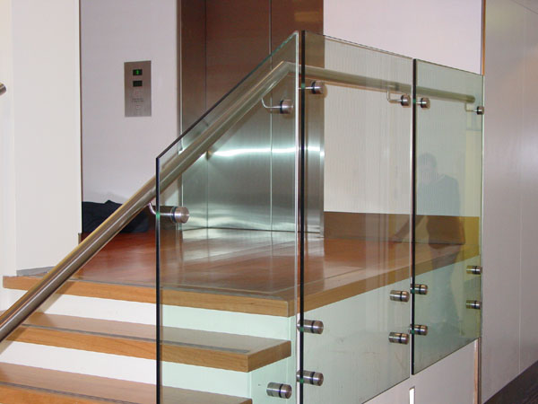

Kian berkembangnya kemajuan zaman, menciptakan banyak bahan atau material komplementer yang dapat mempercantik hunian atau daerah usaha anda. Banyak material pendorong yang dapat diterapkan seperti kaca, parket lantai kayu dan masih banyak lagi. Tidak hanya memperindah, tapi material pelangkap tersebut dapat memberi garansi keamanan pada penghuni di dalamnya. Fungsi utama kaca yaitu sebagai pencahayaan alami dan juga sebagai bagian dari keindahan bangunan. Banyak variasi dari kaca yang dapat di gunakan untuk banguan ataupun rumah tinggal.
Tak hanya kaca, sekarang juga telah hadir material pensupport bagi bangunan yang sedang banyak di bangun yakni material parket lantai kayu jati. Berikut ini sedikit ulasan mengenai kaca bagi sebuah banguanan, fungsi utama dan bagaiman memilih kaca yang sesuai untuk sebuah hunian bagus rumah, kantor maupun gedung. Akan di jelaskan juga mengenai lantai kayu jati terbaik yang bisa anda beli.
Jasa Pemasangan Kubikel Toilet di Cimahi
Kalau anda mengininkan kamar kecil yang layaknya mall maupun hotel, ada baiknya anda memakai kubikel kamar mandi Cimahi.
Kaca kini banyak diaplikasikan sebagai penyekat ruang. Salah satunya di kamar mandi. Kubikel kamar kecil atau kubikel kamar mandi ini lebih murah di banding dengan pembuatan kamar mandi atau kamar kecil konvensional. Sebab disana terdapat kubikel kamar mandi Cimahi dengan berbagai ukuran serta ketebalan kaca.
Harga yang ditawarkan malah cukup relatif murah.
Melainkan penerapan kaca di kamar mandi dapat jadi problem dikala Anda meletakkannya dengan salah. Justru embun dapat melekat di kaca dan lambat laun bisa membikin kaca tidak sejernih semula. Sekiranya anda saat ini sedang membutuhkan kaca shower untuk kamar mandi, seketika saja kunjungi dis.or.id untuk melakukakn pengorderan maupun menanyakan terperinci harga dari kaca shower. Kaca shower yang di jual di jamin kaca shower yang mempunyai kualitas terbaik dan berkwalitas tinggi.
Distributor & Supplier Kaca Shower

Kaca shower kini menjadi suatu hal yang banyak diminati sebab banyak orang yang menginginkan sebuah kamar mandi yang memiliki fungsi selain estetika yaitu kenyamanan. Salah satu metode yang dapat diaplikasikan untuk menghasilkan kamar mandi yang selalu bersih merupakan mengaplikasikan shower karena sistem pembersihannya memang jauh lebih praktis dibanding dengan yang memakai konsep bak mandi. Kaca shower ini dapat menjadi dan mempunyai poin estetika tersendiri karena dengan memasangnya tentu kamar mandi anda akan tampak lebih cantik dan mewah layknya kamar mani hotel. Pelaksanaan ini memang desain shower berbahan kaca memang lebih banyak diaplikasikan ketimbang desain shower berbahan tirai.
Tak anda sedang mencari kaca shower untuk kamar mandi, anda bisa segera mengunjungi dis.or.id.
Distributor, Supplier & Jasa Pasang Kanopi Kaca
Banyak ragam kaca kanopi yang dipakai sebagai atap, tidak cuma satu ragam saja. Atap kaca skylight ditujukkan untuk menerima cahaya alami UV yang mempunyai fungsi sebagai penerangan dalam sebuah ruang. Harga atap kaca per meter persegi juga benar-benar dipengaruhi oleh struktur pendukung yang di gunakan. Disinilah letak perbedaan optis yang utama antara akrilik (acrylic) dengan kaca. Bila tembus pandang, kaca menyerap sinar yang masuk sehingga kian tebal kaca maka kian sedikit cahaya yang bisa melewatinya, karenanya sifat transparannya makin berkurang.|Di samping pintu kaca shower akan membikin kamar mandi kecil tampak lebih besar. Pada atap akrilik, penyerapan sinar yang terjadi demikian kecil sehingga sedangkan ketebalannya bertambah, sifat transparannya tidak banyak berubah.
Terdapat banyak kanopi dengan pelbagai ukuran dan ketebalan yang bisa anda pilih cocok dengan yang anda butuhkan. Banyak bangunan seperti gedung perkantoran, perumahan, ruko dan apartement yang mengaplikasikan kanopi kaca tempered. Seandainya fungsi utama kanopi sebagai pelindung untuk bangunan tersebut, pemasangan kanopi kaca juga bisa membikin bangunan menjadi kelihatan lebih menawan dan menarik, apalagi mengaplikasikan konsep yang sama dengan konsep rumah minimalis. Setelah kaca untuk atap kanopi cukup digemari. Tidak anda sedang mencari kanopi kaca, anda dapat segera mengunjungi dis.or.id. Disana anda akan mendapatkan kanopi kaca yang sesuai dengan berbagai ketebalan dan harga yang cukup terjangkau.
Jasa Maintenance Kaca
Jasa maintenance kaca ialah perusahaan yang akan menolong agar gedung perkantoran Anda menonjol seperti baru. Kaca sungguh-sungguh memerlukan perawatan sebab setiap hari terkena cahaya sang surya atau juga hujan. Kaca menjadi kusam. Membersihkan bagian kaca gedung Anda yang mungkin rusak, pecah, atau mengalami permasalahan lainnya.
Dengan mengaplikasikan bahan pembersih yang akan membikin kaca kelihatan bersih seperti pertama kali dipasang. Seandainya juga dengan warna dan format kaca.
Dengan daya spesialis yang siap untuk melakukan pembersihan dan bahan pembersih yang di miliki, kaca gedung perkantoran Anda akan terlihat seperti baru lagi. Dis.or.id juga telah mempersiapkan dengan pelbagai alat yang dapat digunakan untuk menjangkau segala sudut gedung, sekalipun gedung Anda sungguh-sungguh tinggi. Oleh karena itu, dis.or.id cuma memilih orang-orang yang betul-betul profesional dan telah memiliki pengalaman dalam hal maintenance kaca. Dengan sudah memberikan training kepada tenaga pakar sehingga mereka telah bisa melakukan profesi mereka dengan betul-betul baik.
Jasa Pemasangan Kaca Tempered
Jasa pemasangan kaca tempered menawarkan solusi bagi Anda mempunyai budget yang terbatas tetapi mau mempunyai properti, entah itu gedung perkantoran, toko, atau rumah hunian yang menerapkan kaca tempered. Dibutuhkan kaca ini diciptakan dari kaca float bermutu tinggi via pelaksanaan pemanasan thermal di mana kaca dipanaskan sampai pada spot lunak kemudian didinginkan dengan kencang. Untuk komponen perkantoran, pintu, partisi, serta balkon biasanya terbuat dari kaca tempered. Sementara itu, untuk rumah hunian, bagian dari rumah seperti kamar mandi serta kanopi biasanya terbuat dari kaca tempered. Banyak bagian properti yang bisa diciptakan dengan bahan berupa kaca tempered. Selain ini tak lain sebab kian banyak orang yang memahami kualitas serta keunggulan dari kaca tempered ini.
Untuk itu, dis.or.id hadir sebagai penyedia jasa pemasangan kaca tempered yang sudah berpengalaman. Tak anda berminat untuk memasang kaca temeperd, anda cuma tinggal mengunjungi laman dis.or.id. Bukan sembarang alat yang digunakan untuk memotong kaca tempered layak dengan kebutuhan. Tak dikala ini anda sedang berharap membangun suatu bangunan atau gedung, anda bisa memanfaatkan kaca tempered untuk diaplikasikan seketika ke semua jenis bidang. Apabila aman kaca tempered juga mampu memberikan kesan keindahan yang benar-benar bagus dibandingkan dengan kata variasi lainnya. Lebih dari itu, dis.or.id telah menyiapkan kekuatan pakar yang siap untuk melakukan pemasangan, entah itu kaca tempered untuk kanopi, pintu, partisi, balkon, dan lain sebagainya.
Distributor & Supplier Pintu Kaca
Pintu kaca yaitu hal yang cukup penting dimiliki oleh sebuah bangunan. Banyak orang yang lebih suka dengan model pintu kaca minimalis, adalah pintu kaca frameless. Ada juga pintu kaca dengan frame dengan desain yang berbeda seperti folding dan sliding. Tersedia sebagian jenis kaca dengan kwalitas yang terbaik, mulai dari kaca tempered hingga yang non-tempered. Anda tinggal tentukan saja figur pintu kaca seperti apa yang berkeinginan Anda miliki. Sekarang paling banyak diminati ketika ini yakni kaca tempered karena jauh lebih kuat dan tahan lama.
Anda bisa mempunyai pintu kaca unggulan anda sekarang juga dengan mengunjungi dis.or.id. Disana terdapat beragam jenis pintu kaca yang bisa anda jadikan opsi.
Dis.or.id juga menyiapkan sebagian tipe kaca dengan ketebalan yang berbeda. Untuk budget yang lebih sedikit, Anda bisa memilih ragam kaca non-tempered.
Jual Kaca Cermin

Kaca cermin bisa dijadikan aksesoris untuk mempercantik interior rumah Anda. Ini tak cuma sebagai kaca cermin persegi. Anda dapat tentukan desain seperti apa yang Anda inginkan. Ada cermin persegi yang direkatkan beraturan, cermin berbentuk seperti daun, dan lain sebagainya. Jadi, Anda memiliki banyak opsi untuk memutuskan cermin yang Anda pilih benar-benar dapat mempercantik interior rumah Anda. Untuk membikin ruangan private, maka kaca ini transparan jikalau diamati dari dalam. Kini perlu dipandang juga yakni apakah Anda mau memiliki kaca cermin desain minimalis atau yang elegan. Artinya, Anda tak bisa memperhatikan yang ada di dalam ruangan.
Anda juga bisa tentukan apakah berkeinginan memiliki cermin yang mempunyai bingkai atau tidak. Dan bahan yang diaplikasikan untuk membuat pigura malahan berbeda-beda. Malah, ada juga furniture berupa pintu yang terbuat dari kaca cermin. Sementara itu, Anda yang berada di dalam ruangan dapat melihat orang lain yang ada di luar. Tersedia kaca cermin dengan bermacam ukuran yang dapat anda pesan di dis.or.id. Harga yang relatif murah dan kwalitas terbaik ialah ciri khas dari dis.or.id. Dis.or.id menyediakan kaca cermin yang dapat anda beli dengan harga yang amat murah dan dengan kwalitas terbaik. Tetapi kunjungi dis.or.id untuk menerima penawaran menarik. Disana anda dapat mendapatkan kaca cermin yang sesuai dengan kemauan anda.
Jasa Pemasangan Railing Kaca

Tak Anda berkeinginan mempunyai rumah dengan desain interior minimalis, betul-betul pas ketika komponen tangga dan juga balkon menerapkan railing kaca ini. Pastikan bagian hal yang demikian terbuat dari bahan aluminum yang kuat. Melainkan, kecuali desain, Anda juga perlu memandang bahan yang diaplikasikan. Maka dari itu, para produsen berusaha untuk menghasilkan railing yang terbuat dari kaca dengan contoh yang berbeda-beda. Sekiranya itu, dari segi keamanan, kaca tempered ini juga ideal kalau menjadi alternatif Anda.
Dalam hal ini, Anda dapat memutuskan sendiri berapa ketebalan dari kaca yang dipakai tersebut. Anda bisa memilih kaca tempered sebagai bahan utamanya. Ini adalah ragam kaca yang sangat bagus dan kuat. Kaca ini betul-betul kuat dan juga aman. Dikatakan sangat aman lantaran kaca tempered tidak memunculkan pecahan yang runcing saat tiba-tiba kaca pecah entah itu pengaruh kecelakaan atau petaka seperti gempa. Ini menetapkan kuatnya konstruksi railing kaca. Jikalau memberikan kesan minimalis pada interior rumah, ini juga membuat rumah Anda nampak lebih nyaman untuk dihasilkan daerah tinggal.
Railing kaca dengan mutu terbaik bisa anda temukan di dis.or.id.
Distributor & Supplier Pintu Lipat Kaca
Kaca tempered juga dapat diterapkan untuk pintu lipat kaca. Jadi, bahan ini tak cuma untuk pintu saja. Jika ruang makan bersebelahan dengan taman, Anda bisa sekat dengan pintu lipat kaca ini. Variasi kaca nomor 6 ini amat direkomendasikan untuk dibuat sebagai bahan membuat pintu lipat kaca.
Ukuran kaca menjadi faktor penentu berapa harga pintu kaca lipat yang Anda inginkan. Namun bukan itu saja, aksesoris komplemen juga berakibat. Anda mesti mempertimbangkan aksesoris yang melengkapi pintu kaca lipat memiliki kwalitas terbaik, seperti contoh hinges. Kini, banyak kantor yang tak lagi memiliki ruangan yang disekat dengan tembok dan saat ini beralih dengan ruangan disekat dengan mengaplikasikan kaca.
Distributor & Supplier Partisi Kaca

Partisi kaca sudah lagi dianggap sebagai hal yang aneh lagi. Belum lagi biaya pemasangan yang tak murah. Anda menghitung sendiri berapa uang yang semestinya Anda siapkan untuk membeli bahan untuk partisi tembok. Alasan yang ketiga, partisi kaca ini tidak menghabiskan space. Jadi, Anda akan sangat berhemat bila memilih untuk memasang partisi kaca ini. Anda meniru mereka. Selain, Anda sepatutnya tahu ada desain yang berbeda. Ada partisi kaca frameless atau tanpa bingkai dan partisi dengan bingkai. Anda harus tahu ada kaca transparan, semi transparan dan kaca yang sama sekali tak transparan yang acap kali disebut dengan kaca cermin. Karena juga dengan kaca. Karena variasi kaca ini menentukan privacy ruangan yang disekat. Ada kaca transparan, semi transparan, dan juga kaca cemin yang membuat ruangan amat privat.